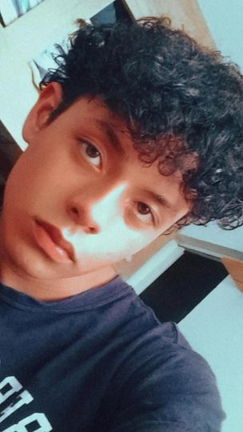

Olá! Sou Gabriel, um Desenvolvedor Front-end
Desenvolvedor web front-end com vasta experiência em desenvolvimento de aplicações web escaláveis e responsivas. Sou apaixonado por criar soluções tecnológicas que resolvem problemas reais e que agregam valor aos usuários.
Saiba Mais
